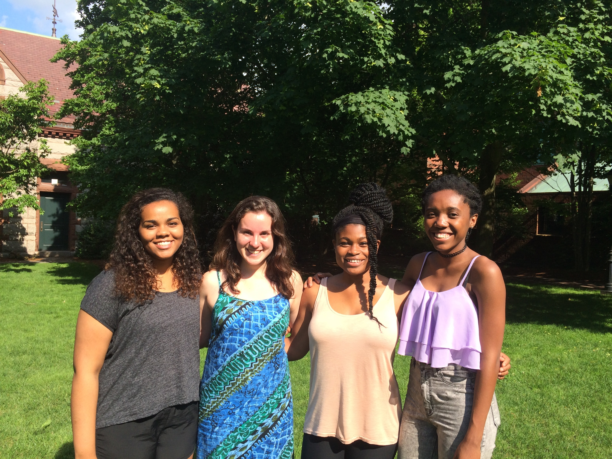
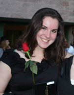

2015 Coordinators
The Artemis Coordinators are undergraduate women at Brown University that are passionate about computer science. You can contact us at artemis@cs.brown.edu.

Asha Owens
Blumberg-Ginsburg Coordinator
 |
Year: 2016
Hometown: Columbus, Georgia
Hobbies and interests: lacrosse, anything outdoors, fashion, traveling
Favorite animated movie: The Land Before Time
If a genie granted me 3 wishes: enough money to travel the entire world, ability to freeze time, ability to make any article of clothing I like appear in my wardrobe
|
Joanna Simwinga
Blumberg-Ginsburg Coordinator
|
Year: 2018
Hometown: Independence, Kansas
Hobbies and interests: volleyball, hiking, listening to music, playing piano, reading
Favorite animated movie: The Lorax
If a genie granted me 3 wishes: The ability to teleport, the ability to charge devices just by looking at them, access to unlimited ice cream
|
Martha Edwards
 |
Year: 2018
Hometown: North Kingstown, RI
Hobbies and interests: playing piano and viola, reading and writing, art, and baking bread
Favorite animated movie: Tangled
If a genie granted me 3 wishes: Worldwide happiness, fluency in six or seven languages, ability to find lost objects
|
Chelse-Amoy Steele
|
Year: 2018
Hometown: Conyers, Georgia
Hobbies and interests: cooking and dancing (modern, mande, & contact improvisation)
Favorite animated movie: Frozen
If a genie granted me 3 wishes: The ability to speak every language, tickets to go to every NBA finals game, and the ability to stop time
|